1) Подъем на бицепс:
Гантеля (~ 5кг) 2х1012Штанга (~ 30кг) 3х8123- Как это делать: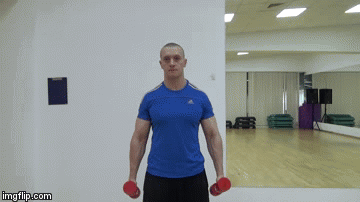
2) Подъем гантели на бицепс сидя:
Гантеля (~ 5кг) 3х15123- Как это делать: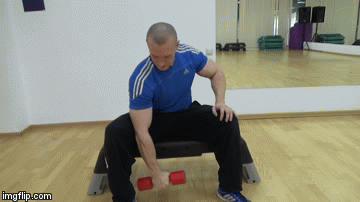
3) Подъем гантели на кисть:
Гантеля (~ 10кг) 3х15123- Как это делать: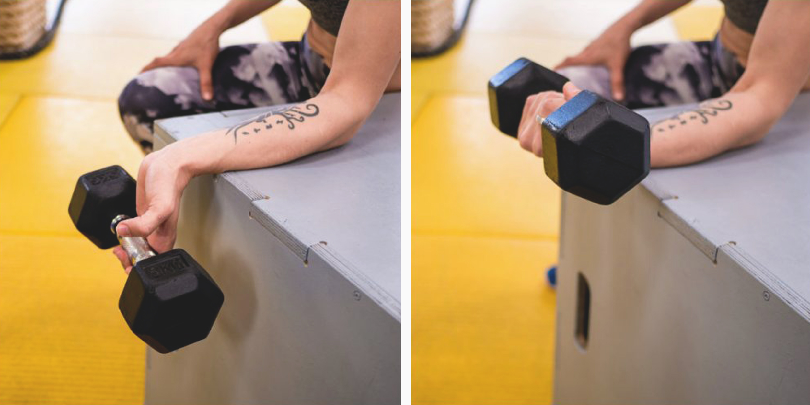
1) Приседание с штангой (обычная стойка):
Штанга (~ 30кг) 3х10123- Как это делать: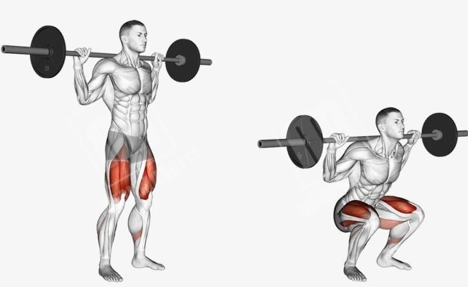
2) Выпады с штангой:
Штанга (~ 30кг) 3х10123- Как это делать: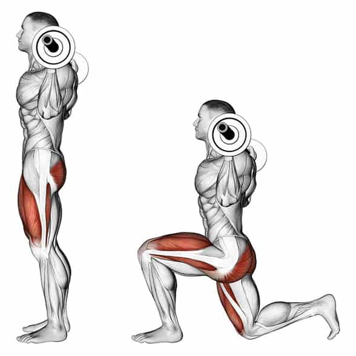
3) Подъем на икры с штангой (Три подхода с разной стойкой):
Штанга (~ 30кг) 3х15123- Как это делать: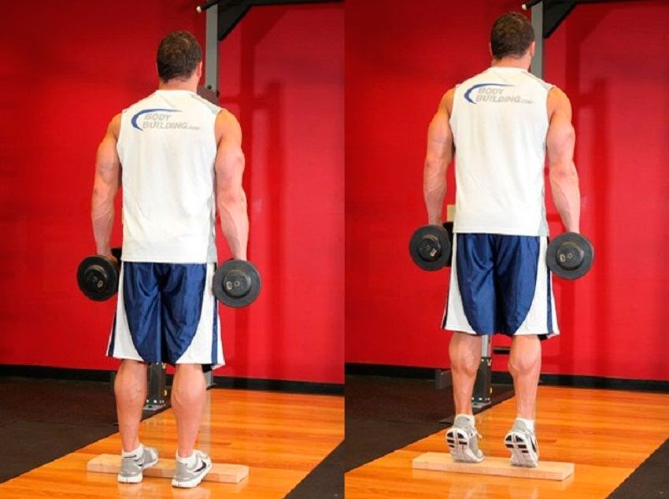
1) Жим штанги:
Штанга (~ 35кг) 3х11123- Как это делать: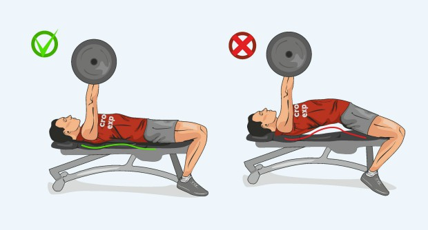
2) Разведение гантелей лёжа:
Гантеля (~ 5кг) 2х1212- Как это делать: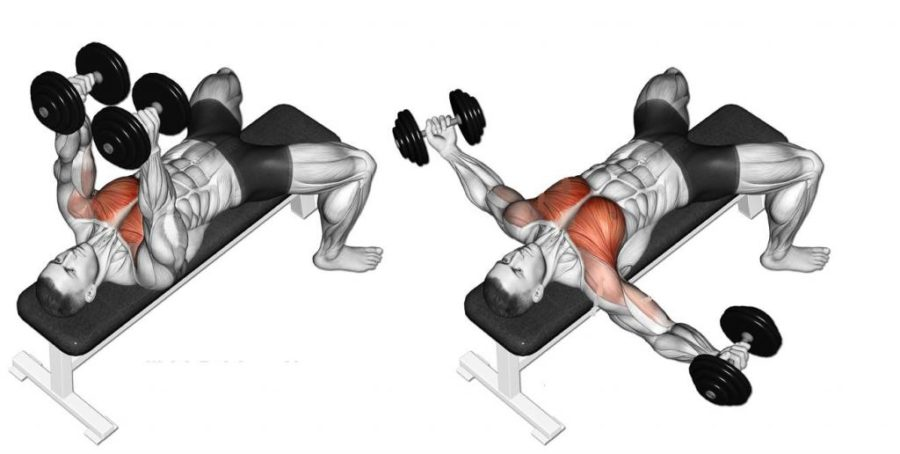
3) Жим гантелей лёжа:
Гантеля (~ 5кг) 2х1512- Как это делать: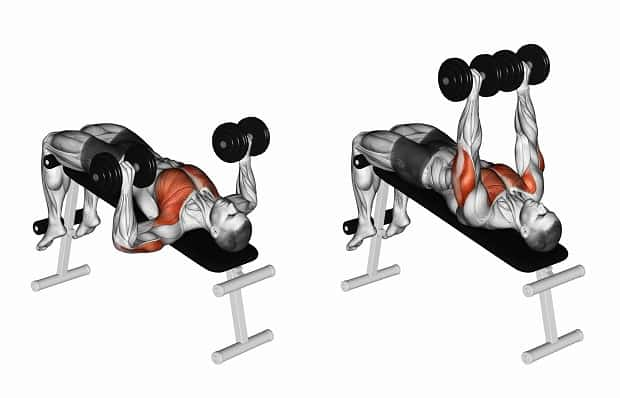
1) Тяга штанги в наклоне:
Штанга (~ 30кг) 2х1512- Как это делать: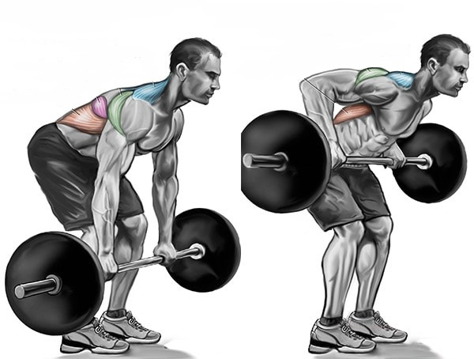
2) Тяга гантели к бедру:
Гантеля (~ 5кг) 3х15123- Как это делать: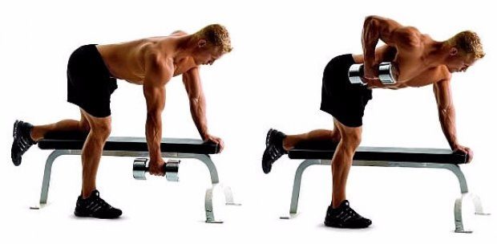
3) Шраги:
Штанга (~ 30кг) 3х10123- Как это делать: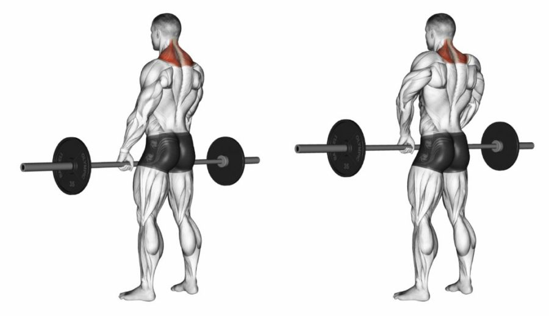 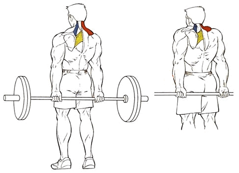
4) Планка:
3х30(сек)123- Как это делать: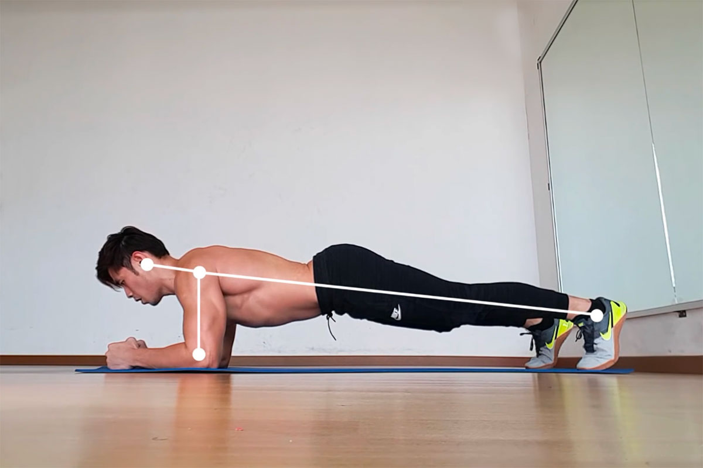
1) "Молоток":
Гантеля (~ 5кг) 3х15123- Как это делать:

2) Сгибание рук на скамье:
Гантеля (~ 5кг) 3х15123- Как это делать:

3) Жим от пола:
Свой вес (~ 100кг) 3х10123- Как это делать: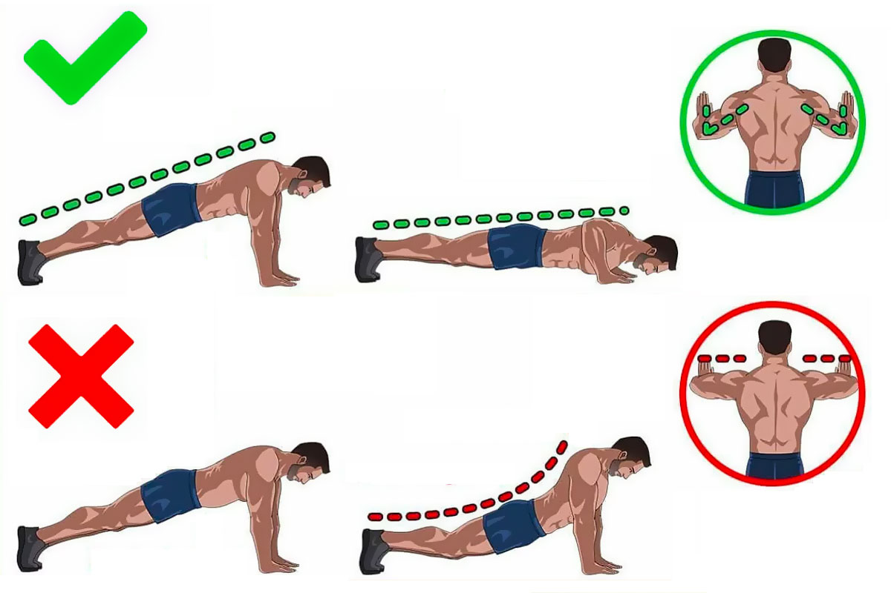
1) Приседание с штангой (широкая расстановка ног):
Штанга (~ 30кг) 3х15123- Как это делать: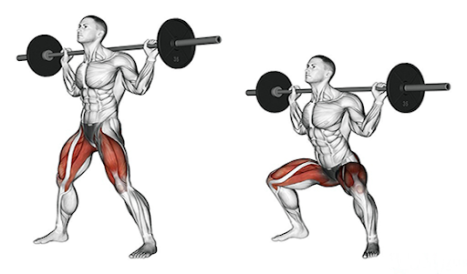
2) Мертвая тяга с штангой:
Штанга (~ 30кг) 2х1012- Как это делать: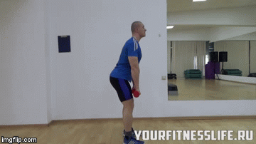
3) Подъем на икры с штангой:
Штанга (~ 30кг) 3х15123- Как это делать:
1) Французкий жим лёжа:
Гантеля (~ 5кг) 3х10123- Как это делать: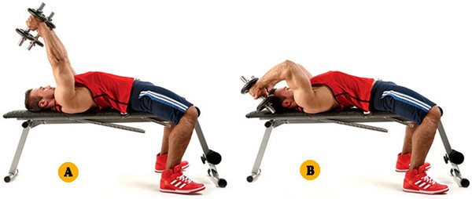
2) Французкий жим сидя:
Гантеля (~ 7.50кг) 2х1512- Как это делать: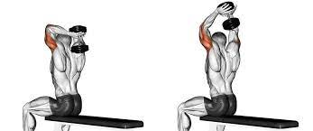
3) Расгибание из-за головы:
Гантеля (~ 5кг) 2х1512- Как это делать: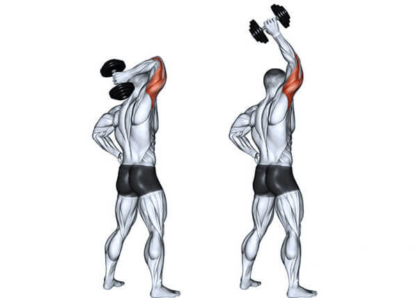
3) Расгибание в наклоне:
Гантеля (~ 5кг) 2х1512- Как это делать: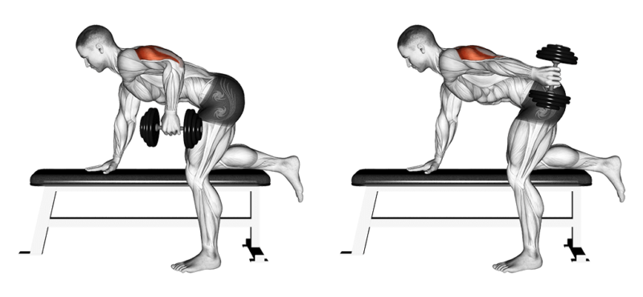
1) Жим штанги:
Штанга (~ 35кг) 3х11123- Как это делать:
2) Разведение гантелей лёжа:
Гантеля (~ 5кг) 2х1212- Как это делать:
3) Жим гантелей лёжа:
Гантеля (~ 5кг) 2х1512- Как это делать:
1) Махи перед собой:
Гантель (~ 5кг) 3х10123- Как это делать: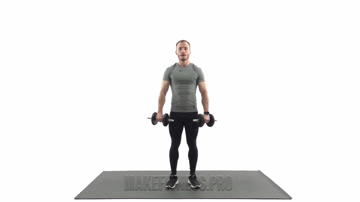
2) Жим гантелей вверх:
Гантеля (~ 5кг) 3х10123- Как это делать: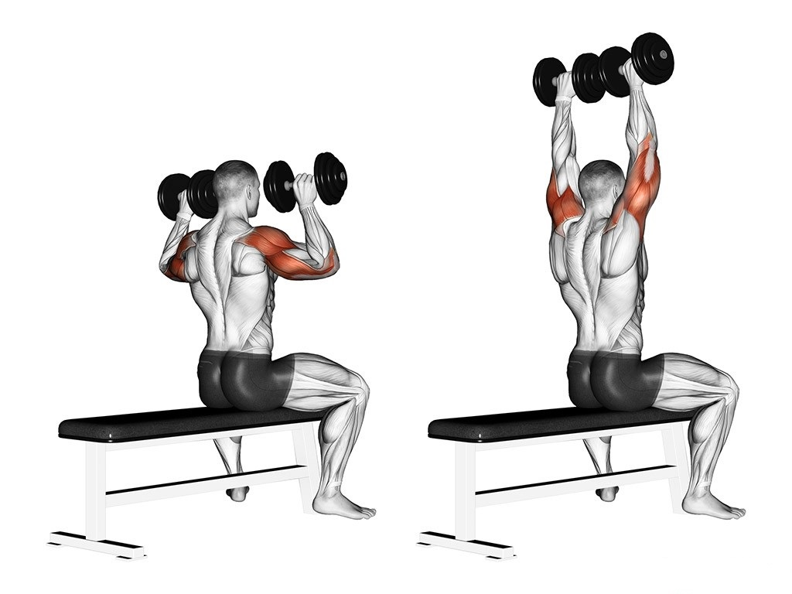
3) Жим в стороны:
Гантеля (~ 5кг) 2х1012- Как это делать: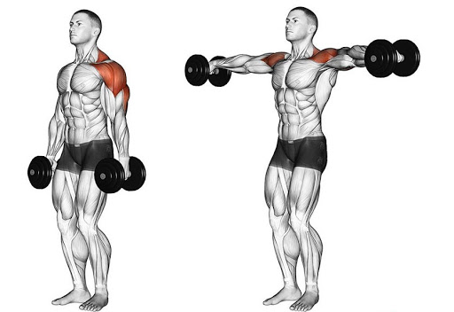
4) Жим Арнольда:
Гантеля (~ 5кг) 2х1012- Как это делать: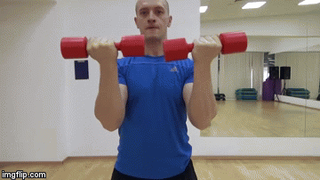
5) Разведение в наклоне:
Гантеля (~ 5кг) 2х1012- Как это делать: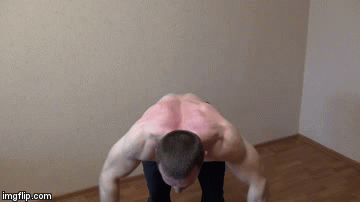
1) Тяга штанги в наклоне:
Штанга (~ 30кг) 2х1512- Как это делать:
2) Тяга гантели к бедру:
Гантеля (~ 5кг) 3х15123- Как это делать:
3) Шраги:
Штанга (~ 30кг) 3х10123- Как это делать:
4) Планка:
3х30(сек)123- Как это делать: